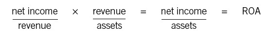

Toolbox
WHICH RATIOS ARE MOST IMPORTANT TO YOUR BUSINESS?
Certain ratios are generally seen as critical in certain industries. Retailers, for instance, watch inventory turnover closely. The faster they can turn their stock, the more efficient use they are making of their other assets, such as the store itself. But individual companies typically like to create their own key ratios, depending on their circumstances and competitive situation. For example, Joe’s company, Setpoint, is a small, project-based business that must keep a careful eye on both operating expenses and cash. So which ratios do Setpoint’s managers watch most closely? One is homegrown: gross profit divided by operating expenses. Keeping an eye on that ratio ensures that operating expenses don’t get out of line in relation to the gross profit dollars the company is generating. The other is the current ratio, which compares current assets with current liabilities. The current ratio is usually a good indication of whether a company has enough cash to meet its obligations.
You may already know your company’s key ratios. If not, try asking the CFO or someone on her staff what they are. We bet they’ll be able to answer the question pretty easily.
You’ll often see one kind of ratio built right into a company’s income statement: each line item will be expressed not only in dollars but as a percent of sales. For instance, COGS might be 68 percent of sales, operating expenses 20 percent, and so on. The percent-of-sales figure itself will be tracked over time to establish trend lines. Companies can pursue this analysis in some detail—for example, tracking what percent of sales each product line accounts for, or what percent of sales each store or region in a retail chain accounts for. The power here is that percent-of-sales calculations give a manager much more information than the raw numbers alone. Percent of sales allows a manager to track his expenses in relationship to sales. Otherwise, it’s tough for the manager to know if he is in line or not as sales increase and decrease.
If your company doesn’t break out percent of sales, try this exercise: locate the last three income statements and calculate percent of sales for each major line item. Then track the results over time. If you see certain items creep up while others creep down, ask yourself why that happened—and if you don’t know, try to find someone who does. The exercise can teach you a lot about the competitive (or other) pressures your company has been under.
Like the financial statements themselves, ratios fit together mathematically. We won’t go into enormous detail here, because this book isn’t aimed at financial professionals. But one relationship among ratios is worth spelling out because it shows so clearly what we have been saying; namely, that managers can affect a business’s performance in a variety of ways.
Start with the fact that one of a business’s key profitability objectives is return on assets, or ROA. That’s a critical metric because investment capital is a business’s fuel, and if a company can’t deliver a satisfactory ROA, its flow of capital will dry up. We know from this part that ROA is equal to net income divided by total assets.
But another way to express ROA is through two different factors that, multiplied together, equal net income divided by total assets. Here they are:

The first term, net income divided by revenue, is of course net profit margin percentage, or return on sales (ROS). The second term, revenue divided by assets, is asset turnover, discussed in chapter 24. So net profit margin times asset turnover equals ROA.
The equation shows explicitly that there are two moves to the hoop, where the “hoop” is higher ROA. One is to increase net profit margin, either by raising prices or by delivering goods or services more efficiently. That can be tough if the marketplace you operate in is highly competitive. A second is to increase the asset turnover ratio. That opens up another set of possible actions: reducing average inventory, reducing days sales outstanding, and reducing the purchase of property, plant, and equipment. If you can’t improve your net profit margin, working on those objectives—that is, managing the balance sheet—may be your best path to beating the competition and improving your ROA.
DIFFERENT COMPANIES, DIFFERENT CALCULATIONS
Having read the chapters in this part, you might assume that the formulas we present are “the” formulas. Return on assets, for example, is just net income divided by assets, right? Not necessarily. We have presented the standard formulas, but even with those, companies may decide on a particular way of calculating some of the numbers. The accountants do need to be consistent from one year to the next, and public companies must disclose how they are calculating the ratios. But when you compare one company’s ratios with another’s, you need to ask whether they are calculating each ratio the same way.
The most common differences arise with balance sheet data. Let’s use the same example, return on assets. The denominator, total assets, comes from the balance sheet. Of course, the balance sheet typically shows two points in time, say December 31, 2011, and December 31, 2012. For the standard formula, you use the total assets number from the most recent point in time, December 31, 2012. (This is also called ending assets, as it is the last point in time for which you have data.)
But some companies don’t believe that one point in time is a good way of measuring total assets. So they might use “average” total assets, adding the 2011 and the 2012 figures and dividing by 2. Or they might calculate a “rolling average” using three, four, or even five quarters of data. As a new quarter closes, they replace the oldest data with the newest in the calculation.
Does it matter? A little. Rolling averages tend to smooth results out, and ending often shows more ups and downs. Then, too, most financial analysts would agree that some kind of averaging makes more sense for calculations such as ROA. As we mentioned in chapter 21, you have an apples-and-oranges situation whenever you compare an income statement number such as net income to a balance sheet number such as total assets. The income statement measures profit or income over a period of time. The balance sheet lists assets at a point in time. So it seems more reasonable to use a rolling average of total assets over the whole period rather than assets at a single point in time.
In general, though, the precise methodology may not matter much. Remember that ratios are used to look at trends over time, and as long as a company’s methodology is consistent you can learn a lot from the comparison.